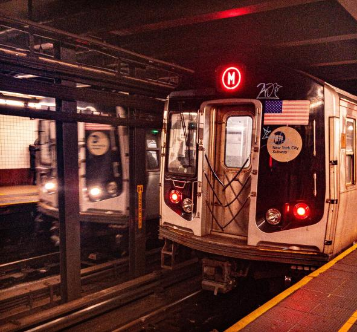
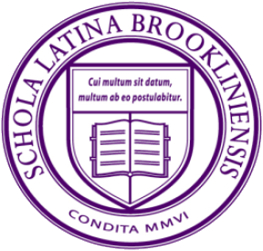
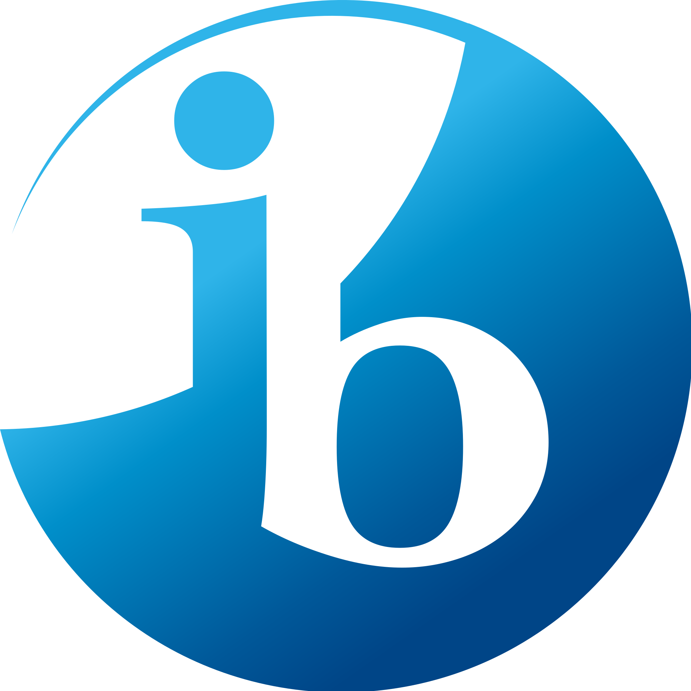
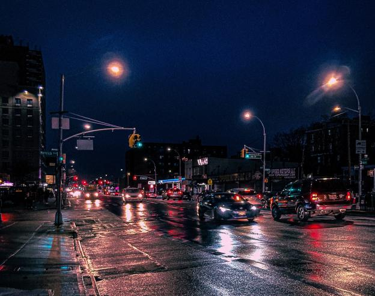

My Profile - AKM Hossain
About Me
Hi. My name is AKM (just pronounced three letters) and I currently live in NY.
I moved from Bangladesh to NY at the age of three, and I have two younger siblings.
I'm always down to try new things and see if I enjoy them.
In the future, I hope to pursue radiology and help others.

Yes, I am a bit of a train enthusiast. :)
Academics
Currently a rising senior Brooklyn Latin. GPA: idk Travel || Time: 1hr 15mins
Pros: Minimal stair climbing and huge playground. 1 of 9 NYC specialized highschools.
Cons: Very packed. Only 3 floors shared among 2 schools.
Brooklyn Latin offers students to pursue the International Baccalaureate (IB) diploma.


Extracurriculars
Some clubs I have attended: Chess, Photography, Badminton
Sports I enjoy: Ultimate Frisbee , Badminton
Hobbies: Trains, Photography, Editing
Volunteer Experience: Tutoring
